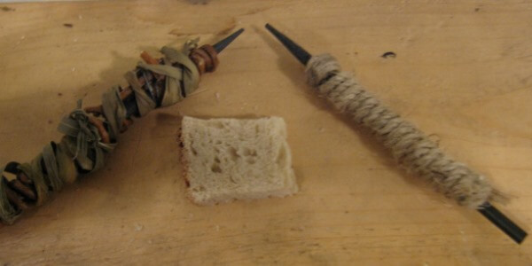

Historia del lápiz
El lápiz como lo conocemos hoy en día tiene sus orígenes en la Antigua Grecia, donde los antiguos griegos utilizaban una varilla
de plomo para marcar sus papiros. Con el tiempo, este concepto evolucionó y se empezaron a utilizar otros materiales como la
madera y el grafito, lo que dio lugar al lápiz moderno, pero esto se dio cuando el grafito llego a Inglaterra, ya que anteriormente en
la Antigua Grecia vendian el grafito envuelto por cu ero, hojas o cabuya. La palabra "lápiz" proviene del latín "lapis", que significa
"piedra", haciendo referencia al grafito utilizado en su interior.

Con el tiempo, artistas de renombre como Leonardo da Vinci, Miguel Ángel y Albrecht Dürer utilizaron el dibujo a lápiz para crear
obras maestras que han perdurado a lo largo de los siglos. A medida que la técnica del dibujo a lápiz se fue perfeccionando, se
convirtió en una forma de expresión personal para muchos artistas, permitiéndoles explorar texturas, sombras y detalles con
una versatilidad única.
Hoy en día, el dibujo a lápiz sigue siendo una forma popular de arte, tanto para artistas aficionados como para profesionales. La
accesibilidad y la simplicidad de los materiales necesarios lo hacen una opción atractiva para aquellos que desean explorar su
creatividad a través del dibujo.